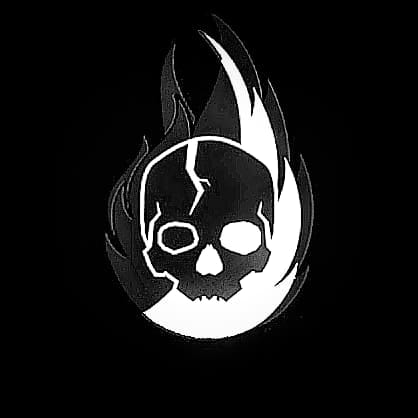
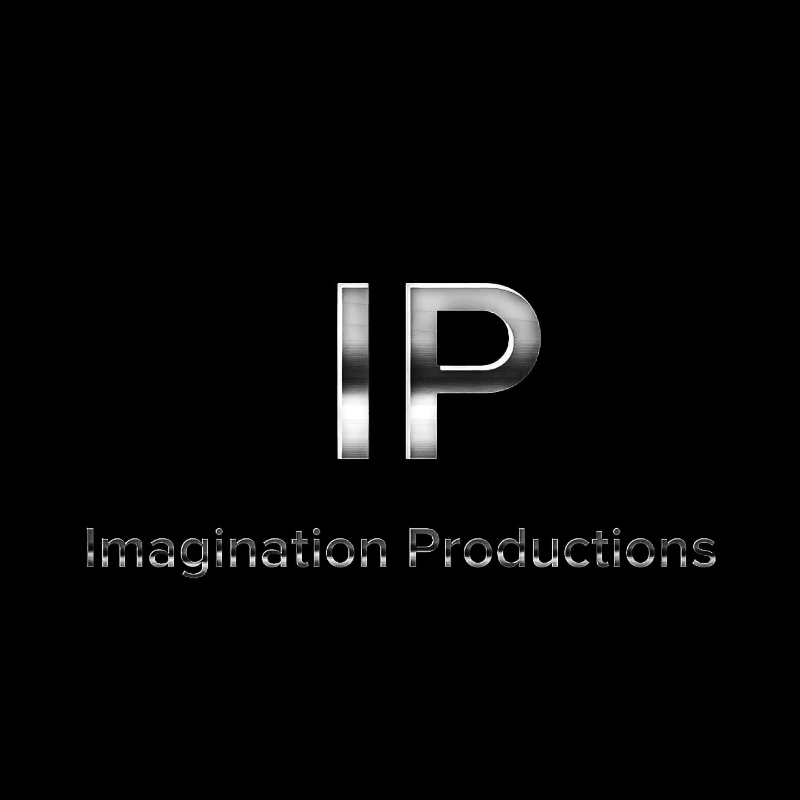
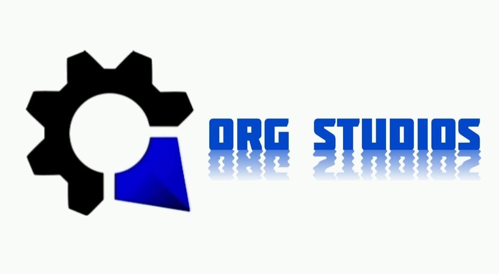
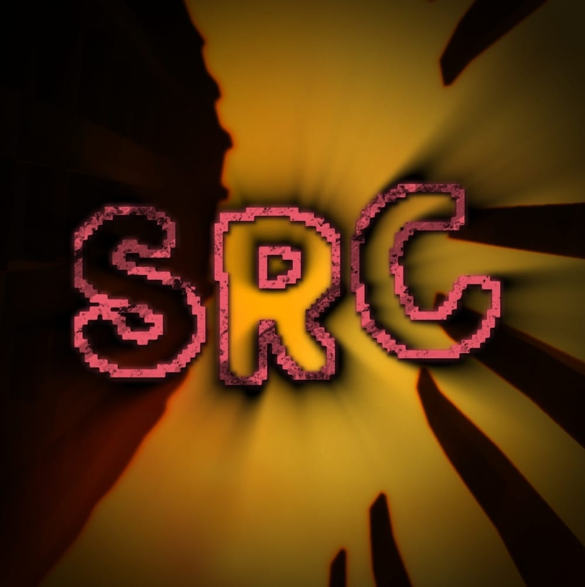

Construyendo
mundos juntos.
El espacio de Nils1936 para reunir sus proyectos, colaboraciones y habilidades como editor, compositor y programador.
Estadísticas del perfil
Formación y datos de Nils1936.
Proyectos principales
De comunidad a producción.

Saved Clan
El clan de Nils1936: un punto de encuentro para jugar, crear equipo y construir una identidad compartida.

Imagination Productions
Un proyecto creativo desarrollado en colaboración con Madera, pensado para convertir ideas en experiencias con personalidad a través de contenido de machinimas y propuestas cinematográficas. También colaboramos con Rupez Productions.

ORG Studios
La nueva etapa: un estudio relacionado con el desarrollo de videojuegos, creado para dar forma a proyectos ambiciosos, reunir talento y llevar las ideas más lejos.

Stalker Reborn Competitive
También conocido como SRC: servidor competitivo de Discord para The Stalker Reborn. Soy copropietario de este servidor.
Perfil profesional
Las cualidades detrás de cada proyecto.
Editor
Creación y edición de contenido para dar ritmo, identidad y claridad a cada proyecto.
Compositor
Composición de música y atmósferas que aportan emoción a las experiencias creativas.
Programador
Desarrollo de ideas digitales y herramientas para convertir conceptos en proyectos reales.
Moderador y gestor de Discord
Moderación y gestión de servidores de Discord para construir comunidades organizadas, activas y seguras.
Sobre mí
Una parte importante de mi identidad.
Tengo autismo y TDAH. Forman parte de mi manera de entender el mundo, crear y participar en mis proyectos.
Redes sociales
Enlaces oficiales de Nils1936.